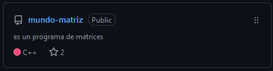
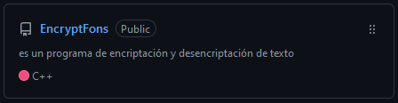
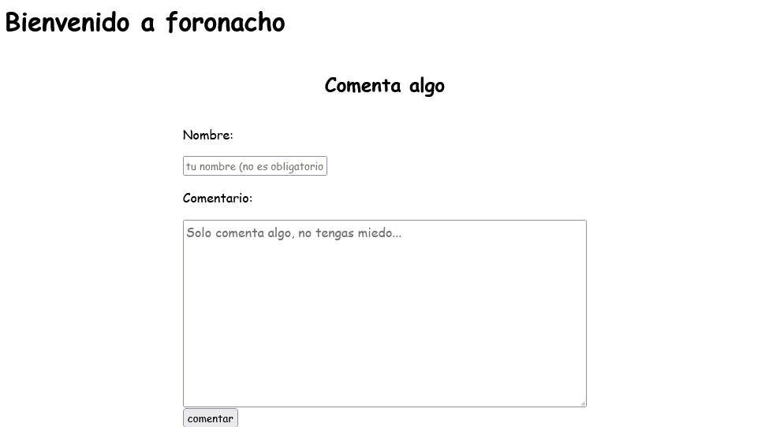

Mis Proyectos
Run es un runner 3D en primera persona hecho en GameMaker: Studio 1.4.
Perdidos en el Espacio es un plataformero 2D hecho en GameMaker: Studio 1.4 para la Global Game Jam 2020.
Las aventuras de Caranca Renga es un plataformero 2D hecho en Unity para la Ave Jam 2020.
Eaglekiller (Oh! My Treasures!) es un shooter 3D en primera persona hecho en GameMaker: Studio 1.4 para la Global Game Jam 2021.

Mundo Matriz es un programa de Código Abierto hecho en C++ con el fin de manipular y aprender el uso de matrices.

EncryptFons es un programa de Código Abierto hecho en C++ con el fin de manipular y aprender la encriptacion y descencriptacion de cadenas de textos.

Foronacho es un clon básico de un foro chan genérico hecho en PHP con fines educativos.